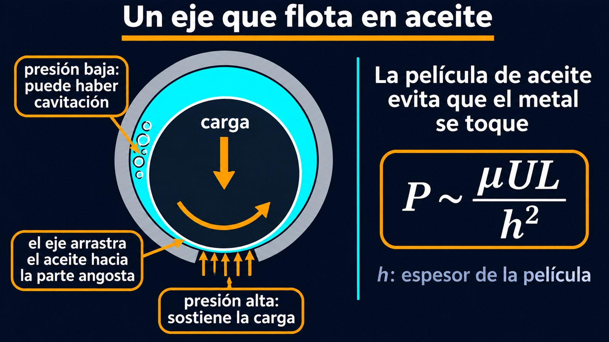

Una cuña de aceite que levanta la pieza que se desliza
El eje de un motor gira miles de veces por minuto dentro de su cojinete, con una carga enorme encima, y sin embargo el metal casi no se gasta. Entre el eje y el cojinete hay una película de aceite muy delgada, y esa película alcanza para que las piezas no se toquen. ¿Cómo puede algo tan delgado sostener tanto peso? La respuesta es la teoría de la lubricación, una de las aplicaciones más útiles de la viscosidad.
Los apuntes del curso de flujos viscosos del Imperial College de Londres empiezan con un hecho observado: capas delgadas de fluido pueden impedir que dos cuerpos sólidos se toquen [1]. El análisis del flujo en esas capas delgadas se llama teoría de la lubricación [1]. La idea clave es que la capa es mucho más delgada que el largo de las piezas: si h es el espesor y L el largo, h es mucho menor que L [1].
En una capa así, la inercia del fluido es despreciable frente a la viscosidad, siempre que el número de Reynolds multiplicado por (h/L)² sea chico [1]. Los apuntes subrayan una consecuencia sorprendente: estos flujos dominados por la viscosidad pueden ocurrir aunque el número de Reynolds sea grande, siempre que la capa sea lo bastante delgada [1]. Y la presión en la película es del orden de μUL/h²: como h es diminuto, la presión puede ser enorme [1].
El ejemplo clásico es el cojinete deslizante: una superficie plana que se desliza sobre otra, levemente inclinada, de modo que el espacio entre ellas se angosta en la dirección del movimiento [1]. La pieza que se mueve arrastra el aceite hacia la parte angosta de la cuña. El aceite no tiene por dónde escaparse lo bastante rápido, y su presión sube por encima de la atmosférica [1]. Esa presión empuja las dos superficies para separarlas: según los apuntes, el fluido es arrastrado hacia el espacio entre las piezas y las mantiene separadas [1].
Los apuntes muestran además que la fuerza que separa las superficies es mucho mayor que la fuerza de rozamiento que frena el deslizamiento [1]. Y advierten qué pasa si el movimiento va al revés, hacia la parte ancha de la cuña: el efecto se invierte, y las superficies terminan tocándose [1].
El auto que hace aquaplaning: cuando un auto va rápido sobre una ruta mojada, el agua que la cubierta arrastra hacia adelante no alcanza a escaparse por los costados, se acumula bajo la goma y la levanta del asfalto. Es el mismo mecanismo de la cuña de aceite, pero en un lugar donde no lo querés: en un cojinete, ese levantamiento es justamente lo que se busca (un razonamiento a partir de la teoría de la lubricación).
En un motor, el eje gira dentro de un cilindro un poco más grande, el cojinete. Según los apuntes del Imperial College, un cilindro que gira puede quedar sostenido dentro de otro algo más grande por las altas presiones de la lubricación [1]. Si el eje está un poco descentrado, el espacio entre los dos varía alrededor del cilindro: en un lado es más angosto que en el otro [1]. A partir del punto más angosto, la presión sube hasta un máximo y después baja hasta un mínimo [1]. La presión alta sostiene la carga. La baja puede ser tan baja que el aceite forme burbujas: cavitación [1].

Los apuntes llaman a la ecuación que gobierna estas películas la ecuación de lubricación de Reynolds [1]. Osborne Reynolds, el mismo del número de Reynolds, publicó en 1886 en las Philosophical Transactions de la Royal Society un trabajo titulado «Sobre la teoría de la lubricación y su aplicación a los experimentos del señor Beauchamp Tower, incluida una determinación experimental de la viscosidad del aceite de oliva» [2].
La misma ecuación, otro flujo: si la película tiene espesor constante y las superficies no se mueven, la ecuación de Reynolds se reduce a la de un flujo potencial: es el flujo de Hele-Shaw entre dos placas muy cercanas [1]. Los apuntes destacan la curiosidad: este flujo muy viscoso es la manera más fácil de lograr en el laboratorio el flujo potencial bidimensional de la teoría ideal [1]. Más en el flujo potencial.
La lubricación es la viscosidad trabajando a favor. En una película muy delgada, el lubricante arrastrado hacia una cuña que se angosta genera presiones enormes, proporcionales a la viscosidad y a la velocidad y divididas por el cuadrado del espesor. Esas presiones separan las piezas, y la fuerza que las separa es mucho mayor que la que frena el movimiento. Por eso un eje puede girar años sobre una película de aceite casi invisible.
Pregunta para la comunidad: Según la estimación P ~ μUL/h², ¿qué le pasa a la presión de la película si su espesor se reduce a la mitad? ¿Por qué eso ayuda a que un cojinete se «autoproteja» cuando la carga aumenta y la película se aprieta?